A complete walkthrough of geocomplexity — a local measure of how
far a variable's neighbourhood departs from smooth spatial dependence — and of the claim it was
built to support: that the places a model gets wrong are the places the geography is complex.
From raw data to manuscript, on the published case.
R/ pipeline scripts · config/project-config.R ·
data/econineq.gpkg (333 Australian SA3 regions, the published case) ·
tests/ · run-all.R — unzip and run
Rscript run-all.R test from the GC/ folder root.
Upload a CSV (ID, location, and one or more variables), press Compute,
and download a table of your data with one geocomplexity column per variable, plus the
variable–geocomplexity curves. Identical to geocomplexity::geocd_vector();
all computation stays on your device.
To cite the geocomplexity model and its R package and codes in publications, please use:
Zhang Z, Song Y, Luo P, Wu P (2023). Geocomplexity explains spatial
errors. International Journal of Geographical Information Science 37(7):1449–1469.
doi ·
PDF
Lyu W, Song Y, et al. geocomplexity: Geographical Complexity.
R package.
CRAN ·
vignettes
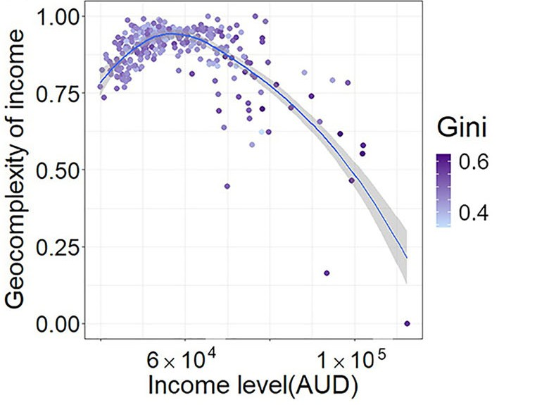
1 Method Overview & Reproduction Scope
1.1 Core Idea
Spatial models rest on an assumption they rarely state aloud: that nearby places behave
similarly, so a value can be borrowed from its neighbourhood. Where that holds, models work.
Where it breaks — a coastline, a city edge, a mining town in a pastoral district — the model
keeps borrowing anyway, and gets it wrong.
Geocomplexity measures where it breaks. At each location it asks how far the local
arrangement of a variable departs from smooth spatial dependence: low where the neighbourhood is
orderly, high where it is not. The paper's claim follows directly, and is testable: if
geocomplexity marks the places where the assumption fails, then it should predict where a
model's errors are — and it does, without ever seeing the model.
Research problem: spatial model errors are not random, they cluster, and the usual
diagnostics report only that they cluster rather than why.
One-line contribution: geocomplexity turns the local breakdown of spatial dependence
into a number computed from the explanatory variables alone, and that number explains a
measurable share of the errors of ordinary, non-linear and locally varying models.
Why it matters: a diagnostic computed before fitting tells you where the
model will struggle; and because it is just another variable, feeding it back in improves
the model — R² rises from 0.585 to 0.622 for a linear model and 0.802 to 0.836 for
geographically weighted regression in the demo below.
Published reference · geocomplexity
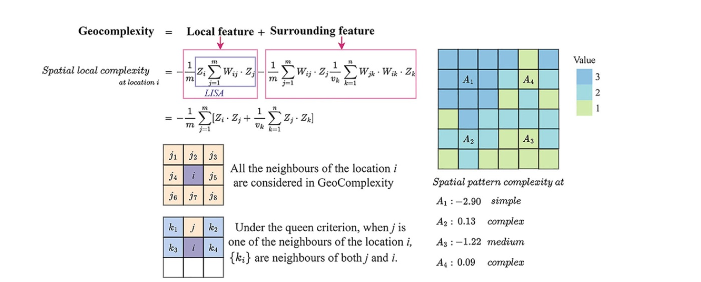
Paper Fig. 1 — the measure. Geocomplexity splits into a local feature (the
LISA term, how the location relates to its neighbours) and a surrounding feature (how
those neighbours relate to each other). Every neighbour under the queen criterion counts. The
worked grid on the right shows the result: A₁ at −2.90 sits in a uniform patch and is
simple; A₂ at 0.13 sits where three values meet and is complex.
Zhang, Song, Luo & Wu (2023), IJGIS 37(7):1449–1469 (open access).
◆Reader anchor
Models assume the neighbourhood is informative → geocomplexity measures where that
assumption breaks down → those are the places the model errs → so geocomplexity explains
spatial errors, and adding it repairs part of them. Everything on this page serves that
line.
✓What you need
R 4.1+ with sf, sdsfun and geocomplexity for the
method itself, plus e1071, GWmodel and ggplot2 for the
models and figures. The case data ship in this folder. The full pipeline takes about
90 seconds, nearly all of it in the bandwidth searches of the five geographically
weighted regressions.
1.2 Method Logic
Geocomplexity sits at the root of a family of methods on this site: once you can measure where
spatial dependence breaks down locally, you can use that measure as a diagnostic, as an
explanatory variable, or as a weight.
The first term is local Moran — the location against its neighbours. The second is what
geocomplexity adds — the neighbours against each other. A place can agree with its
neighbours while those neighbours disagree among themselves, and only the second term
sees it.
Two alternative measures, for different questions.spvar is the spatial
variance, Γ = ΣiΣj≠iωij(yi−yj)²/2
÷ ΣiΣj≠iωij — the raw local fluctuation.
shannon is the entropy of the neighbourhood. They are not interchangeable, and
Step 2 measures how far apart they are.
One variable or the whole configuration.geocd_* gives the complexity
of each variable separately; geocs_* gives one number for the whole
geographical configuration, built from the similarity between locations.
The claim under test. With ei the error of some fitted model at
location i, geocomplexity should explain |ei|. Because the strength
of that relationship varies over space, the explanation itself is fitted with geographically
weighted regression — as in the paper.
Published reference · geocomplexity
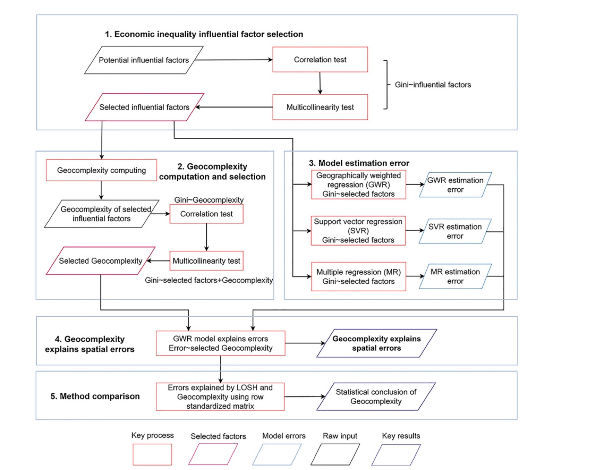
Paper Fig. 3 — the workflow this page follows: compute geocomplexity from the
explanatory variables, fit conventional models, then use geocomplexity to explain what those
models got wrong.
1.3 Reproduction Scope
Everything tagged Demo run regenerates from this folder; everything tagged
Published reference is a static image from the article. The demo runs end to end
with R 4.6.0 and geocomplexity 0.3.0.
!What is reproduced exactly, and what is not
The values checked by run-all.R test are those published in the
package's own vignettes, computed by the method's authors on this same layer — and
they reproduce to four decimals. The article's Tables 3–4 are a different matter: the
shipped layer carries all eight explanatory variables, whereas the article reports a
variable-selection step it does not fully specify, so its absolute R² values are not
reachable from this data. What does reproduce is the mechanism and the ordering, which is
the paper's actual argument — see §3.2, where both are set side by side.
Item
Demo template
Published reference
Data
333 Australian SA3 regions, Gini coefficient and 8 explanatory variables
(data/econineq.gpkg, shipped with the package)
the same case: economic inequality across Australia
Method
geocd_vector() / geocs_vector() / gwr_geoc()
from the authors' package
vignette values reproduced exactly by run-all.R test; article
Tables 3–4 shown for comparison
Figures
fig01–fig06 from R/p01–p03
paper Figs 1, 3, 5, 6, 8 embedded as reference images
What the template regenerates versus what is shown as published reference.
How to use this page
To reproduce the demo: run Rscript run-all.R test, then
Rscript run-all.R. Every number and figure below regenerates.
To use geocomplexity on your own data: §2.3 gives the data contract — one layer with
a response and explanatory variables — and §4.1 the porting steps.
To see geocomplexity used as a building block: the LISP
tutorial treats the geocomplexity of every variable as an extra explanatory variable in
a local stratified-power model.
2 Setup, Structure & Data Contract
2.1 Environment & Dependencies
The method is the CRAN geocomplexity package, written by the authors of the
article. The pipeline adds the two model families whose errors are examined, and each step
reports and continues if an optional package is missing.
R console
# The method and its spatial-weights helper
install.packages(c("geocomplexity", "sdsfun", "sf", "spdep"))
# The models whose errors are explained
install.packages(c("e1071", "GWmodel"))
# Figures
install.packages(c("ggplot2", "scales"))
the GWR baseline, and the error-explanation regressions
Step 4
ggplot2, scales
the six figures
figures only
Package roles. The environment is recorded in
env/session-info.txt.
2.2 Project Structure & Configuration
One entry script runs the five pipeline steps, the figures, or the tests. Each step writes to
results/, tables/, figs/ or data/derived/ and
reads what the previous step wrote, so any step can be re-run in isolation.
folder tree
GC/
├── gc.html # this guide
├── run-all.R # entry point: full run, single steps, figures, test
├── assets/ # figures shown in this guide (web copies)
├── config/project-config.R # the ONLY file to edit for a new domain
├── R/
│ ├── 00-config.R, 01-helpers.R # paths, IO, spatial weights
│ ├── 10-prepare-data.R # read the layer, build the weight matrix
│ ├── 20-geocomplexity.R # compute GC; compare moran / spvar / shannon
│ ├── 30-baseline-models.R # MLR, SVR, GWR and their errors
│ ├── 40-explain-errors.R # GWR of |error| on geocomplexity <- the claim
│ ├── 50-improve-models.R # GCMLR and GeoCGWR
│ ├── 90-tables.R # LaTeX tables + session info
│ └── p01 … p03 # figure scripts
├── data/econineq.gpkg # 333 SA3 regions, the published case
├── tests/ # test-01 published values; test-02 properties
├── env/ # requirements.md, session-info.txt
├── results/ tables/ figs/ # generated output, never hand-edited
Main configuration file
config/project-config.R (key lines)
INPUT_FILE <- "data/econineq.gpkg" # one layer: response + explanatory variables
RESPONSE <- "Gini"
PREDICTORS <- NULL # NULL = every remaining column
# The neighbourhood definition. Geocomplexity is a statement about a
# neighbourhood, so this is a modelling choice, not a detail.
WEIGHTS_TYPE <- "contiguity" # "contiguity" or "knn"
WEIGHTS_QUEEN <- TRUE # queen (TRUE) or rook (FALSE)
WEIGHTS_STYLE <- "B" # "B" binary, "W" row-standardised
GC_METHOD <- "moran" # the working measure
GC_METHODS_COMPARED <- c("moran", "spvar", "shannon") # compared in Step 2
# Models whose errors are explained, and the geocomplexity that explains them
SVR_COST <- 1.4; SVR_GAMMA <- 0.2 # the paper's cross-validated optimum
GWR_APPROACH <- "AIC" # bandwidth criterion
ERROR_EXPLAIN_VARS <- c("Income", "Indemp")
Parameter
Default
Origin / rationale
WEIGHTS_QUEEN, WEIGHTS_STYLE
TRUE, "B"
queen contiguity with a binary matrix, as in the paper's Fig. 1 and its Table 5 comparison
GC_METHOD
moran
the package default and the article's measure; Step 2 shows what changes under the alternatives
SVR_COST, SVR_GAMMA
1.4, 0.2
the values the article selected by ten-fold cross-validation
ERROR_EXPLAIN_VARS
Income, Indemp
the two variables whose geocomplexity the article carries into its error models
Free parameters and the published choices they follow.
2.3 Data Contract
Geocomplexity needs a geometry, because it is computed from neighbourhoods. One layer —
polygons or points — carrying the response and the explanatory variables is the whole
requirement.
Column
Config key
Type
Meaning
Required?
geometry
—
polygon or point
defines the neighbourhoods
yes
response
RESPONSE
numeric
the dependent variable (demo: Gini)
yes
explanatory
PREDICTORS
numeric
the variables whose geocomplexity is measured
≥ 1
Required schema of INPUT_FILE. Column names are declared in the
config, not hard-coded.
Gini
Induscale
IT
Income
Indemp
…
geom
0.420
0
84.3
67,869
2,136
…
MULTIPOLYGON
0.460
0
76.2
46,822
843
…
MULTIPOLYGON
Shape of data/econineq.gpkg — 333 SA3 regions, the Gini coefficient
and eight explanatory variables, in GDA94. First two rows; the highlighter colours the code blocks, the table is verbatim.
!The weight matrix is part of the method, not a setting
Every geocomplexity value is a statement about a neighbourhood, so changing the
neighbourhood changes the answer — tests/test-02 asserts exactly that. Queen
contiguity on polygons is the paper's choice; k-nearest neighbours suits points or very
irregular polygons. Watch the connectivity: a unit with no neighbour at all has no neighbourhood
and no defined complexity, and Step 1 reports that case. Every region in this layer has
at least one neighbour, but the queen graph still splits into two disconnected sub-graphs,
which is normal for a country with offshore regions.
3 Reproduction Pipeline, Results & Validation
3.1 Pipeline Execution
Full run
Rscript run-all.R (~90 s)
Verification
Rscript run-all.R test — do this first
Output folders
results/ tables/ figs/ data/derived/
terminal
cd GC # this folder
Rscript run-all.R test # 1. check against the published values
Rscript run-all.R # 2. full pipeline
Rscript run-all.R 30 40 # re-run single steps (10 20 30 40 50 90)
Rscript run-all.R figures # only the figure scripts
Project : gc-demo
Domain : economic inequality (Gini coefficient)
== Step 1/5 Prepare data ======================================
333 spatial units, geometry: MULTIPOLYGON
response: Gini | 8 explanatory variables: Induscale, IT, Income, ...
weights: queen contiguity, style 'B'
neighbours per unit: min 1, median 5, max 12
== Step 2/5 Compute geocomplexity =============================
method 'moran': 8 variables -> 8 GC columns
method 'moran ' mean GC over all variables = 0.8329
method 'spvar ' mean GC over all variables = 0.0998
method 'shannon' mean GC over all variables = 0.7927
moran vs spvar: correlation -0.45 to 0.06 (median -0.09)
moran vs shannon: correlation 0.26 to 0.82 (median 0.63)
== Step 3/5 Baseline models and their errors ==================
MLR R2 = 0.5846 RMSE = 0.03060
SVR R2 = 0.8030 RMSE = 0.02108 (cost = 1.4, gamma = 0.2)
GWR R2 = 0.8024 RMSE = 0.02111 (adaptive bandwidth 28 by AIC)
MLR errors: Moran's I = +0.422 (p = 1.53e-30) -> spatially structured
SVR errors: Moran's I = +0.234 (p = 7.48e-11) -> spatially structured
GWR errors: Moran's I = +0.105 (p = 0.00188) -> spatially structured
== Step 4/5 Geocomplexity explains the errors =================
MLR errors: R2 = 0.1806 RSS = 0.1101 AIC = -1685 (bandwidth 37)
SVR errors: R2 = 0.0888 RSS = 0.0763 AIC = -1816 (bandwidth 55)
GWR errors: R2 = 0.0220 RSS = 0.0654 AIC = -1884 (bandwidth 114)
error explained, high to low: MLR 0.181 > SVR 0.089 > GWR 0.022
== Step 5/5 Geocomplexity improves the models =================
MLR -> GCMLR: R2 0.5846 -> 0.6215 (+6.3%)
GWR -> GeoCGWR: R2 0.8024 -> 0.8360 (+4.2%)
Finished in 89.0 s
3.2 Reproduce the Published Values
Two different things are checked here, and it is worth being precise about which is which.
The package's published values — reproduced exactly
run-all.R test locks the numbers published in the geocomplexity
package vignettes, computed by the method's authors on this same layer. All twelve checks agree
to four decimals, including the adaptive bandwidth the GWR search selects.
== test-01 Reproduce the published geocomplexity values =================
layer has the published 333 units pass
layer carries Gini and 8 explanatory variables pass
MLR R2 = 0.5846 (got 0.5846) pass
MLR adjusted R2 = 0.5743 (got 0.5743) pass
GCMLR R2 = 0.6215 (got 0.6215) pass
GCMLR adjusted R2 = 0.6024 (got 0.6024) pass
adding geocomplexity raises the linear model's R2 pass
GeoCGWR R2 = 0.836 (got 0.8360) pass
GeoCGWR adjusted R2 = 0.8319 (got 0.8319) pass
GWR selects an adaptive bandwidth of 28 (got 28) pass
GWR R2 = 0.8025 (got 0.8024) pass
GeoCGWR improves on the GWR baseline pass
12 passed, 0 failed
PASS - the pipeline reproduces the published values
== test-02 Geocomplexity properties ====================================
a smooth gradient is less complex than spatial noise pass
adding a constant leaves geocomplexity unchanged pass
a different spatial weight matrix gives a different result pass
...
9 passed, 0 failed
The article's tables — mechanism reproduced, magnitudes not
The article's Tables 3–4 are computed after a variable-selection step that it does not fully
specify, while the shipped layer carries all eight explanatory variables. The absolute values
therefore differ. What survives — and what the paper actually argues — is the ordering:
Quantity
MLR
SVR
GWR
Agreement
Model R², published
0.47
0.65
0.76
—
Model R², here
0.585
0.803
0.802
same ranking of spatial awareness
Error explained by geocomplexity, published
0.467
0.166
0.136
—
Error explained by geocomplexity, here
0.181
0.089
0.022
same descending order
The finding is the descending order, and it reproduces: the more spatially aware
the model, the less of its error geocomplexity has left to explain. The magnitudes differ
because the modelling table does.
✓Checkpoint
21 checks pass — 12 against the published vignette values, 9 on properties the measure
must satisfy regardless of dataset. If those hold, the pipeline is running the reference
implementation as its authors intended.
3.3 Core Analytical Steps
Five stages: purpose → code → output → result → how to read it. Step numbers
match the script numbers (Step 4 is R/40-explain-errors.R).
Step 1
Prepare data — the layer and the neighbourhood
What this step does
Reads the layer, summarises the variables, and builds the spatial weight matrix that every
later step depends on. It also counts neighbours, because a unit with none has no
neighbourhood and therefore no geocomplexity.
== Step 1/5 Prepare data ======================================
333 spatial units, geometry: MULTIPOLYGON
CRS: GDA94
response: Gini | 8 explanatory variables: Induscale, IT, Income, Sexrat, Houseown, Indemp, Indcom, Hiedu
weights: queen contiguity, style 'B'
neighbours per unit: min 1, median 5, max 12
wrote data/derived/analysis-layer.gpkg and weights.rds
◆How to read this result
The weight matrix is the method's first assumption. Queen contiguity says
two regions are neighbours if they touch at all. Change that and every
geocomplexity value changes with it — which is a property, not a bug, and
tests/test-02 checks it holds.
Connectivity is worth checking before trusting the numbers. Every
region here has at least one neighbour (minimum 1, median 5), so geocomplexity is
defined everywhere — but the queen graph still falls into two disconnected
sub-graphs, because the offshore regions touch each other and not the mainland.
A unit with no neighbour at all would have no neighbourhood to be complex relative
to, and the step reports that case rather than letting it become a silent
NA.
Step 2 · the measure
Compute geocomplexity — and check the measure against its alternatives
What this step does
Computes the geocomplexity of every explanatory variable, then recomputes it under all
three measures so the choice is visible rather than buried in a default.
Code
R — from R/20-geocomplexity.R
gc <- geocomplexity::geocd_vector(xp, wt = wt, method = "moran",
normalize = TRUE, returnsf = FALSE)
# and, for the comparison, the same call with method = "spvar" / "shannon"
Example output
Demo run
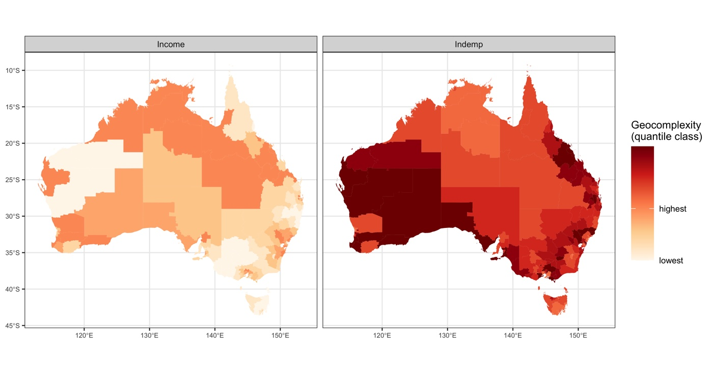
fig01 — geocomplexity of the two variables the error models use, in quantile
classes. Income is complex through the arid interior and simple across the settled
south-east; industrial employment is the reverse, complex in the west and along the
eastern seaboard. Quantile classes are used because geocomplexity is strongly
skewed — a linear ramp paints almost every region the same shade.
Demo run
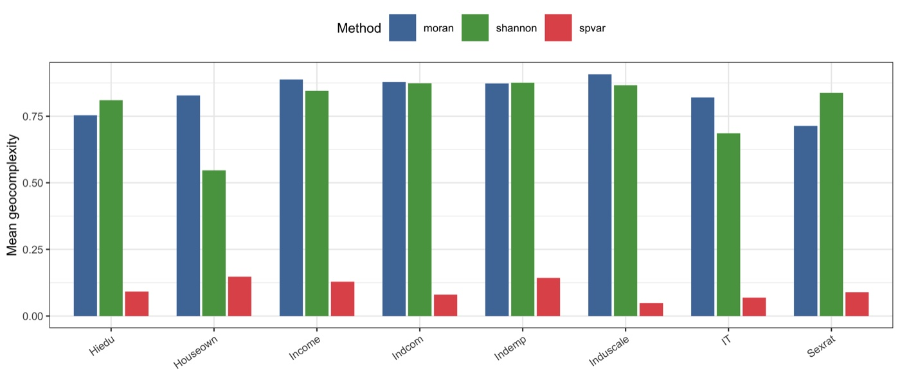
fig04 — the same variables under the three measures. They are on different
scales, and they do not rank the variables the same way.Published reference · geocomplexity
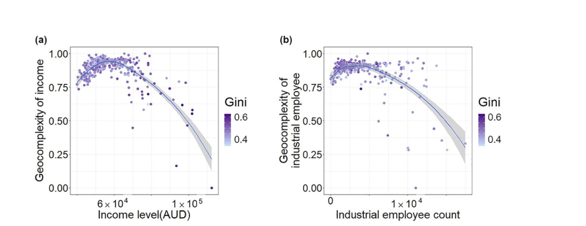
Paper Fig. 5 — the published counterpart: geocomplexity of the selected
variables across the SA3 regions, coloured by the Gini coefficient.
◆How to read this result
Complexity is a property of a variable, not of a place. Income is complex
through the arid interior and simple across the settled south-east; industrial
employment is the reverse. There is no single map of “complex regions”
to draw — each variable carries its own.
Read the maps in quantile classes, not on a linear ramp. Geocomplexity is
strongly right-skewed, so an equal-interval ramp paints almost every region the
same shade and hides the structure Step 4 goes on to use.
Check the measure before trusting the pattern. The comparison in fig04
exists so the choice of moran, spvar or
shannon is a stated decision; the warning below shows how little the
three agree.
!The three measures are not interchangeable
Across the eight variables, moran and spvar correlate at a
median of −0.09 — essentially unrelated — while moran and
shannon reach +0.63 and spvar against
shannon is −0.60. They answer different questions: local
autocorrelation, raw fluctuation, and neighbourhood entropy. Name the measure in the
Methods section; a result under one is not a result under another. The
LISP tutorial uses spvar deliberately, because
there geocomplexity enters as an explanatory variable describing pattern intensity
rather than as a diagnostic of dependence.
Step 3
Baseline models — and the precondition that makes the claim worth testing
What this step does
Fits three models of increasing spatial awareness — a global linear model, a non-linear
but aspatial support-vector regression, and a locally varying GWR — and keeps their errors.
Then it tests whether those errors are spatially structured at all.
Code
R — from R/30-baseline-models.R
f <- stats::as.formula(paste(RESPONSE, "~", paste(preds, collapse = " + ")))
# Three models of increasing spatial awareness; each leaves errors behind
m_mlr <- stats::lm(f, data = d) # global, linear
m_svr <- e1071::svm(f, data = d, kernel = "radial", # non-linear, aspatial
cost = SVR_COST, gamma = SVR_GAMMA)
bw <- GWmodel::bw.gwr(f, data = sp, approach = GWR_APPROACH,
kernel = GWR_KERNEL, adaptive = GWR_ADAPTIVE)
m_gwr <- GWmodel::gwr.basic(f, data = sp, bw = bw, # locally varying
kernel = GWR_KERNEL, adaptive = GWR_ADAPTIVE)
errs[["MLR"]] <- y - stats::fitted(m_mlr) # the subject of Step 4
Example output
Model
R²
RMSE
Errors: Moran's I
MLR — global linear
0.5846
0.0306
+0.422 (p ≈ 10⁻³⁰)
SVR — non-linear, aspatial
0.8030
0.0211
+0.234 (p ≈ 10⁻¹¹)
GWR — locally varying
0.8024
0.0211
+0.105 (p = 0.002)
results/baseline-models.csv. Every model's errors are
significantly clustered — which is what makes the next step worth running.
Published reference · geocomplexity
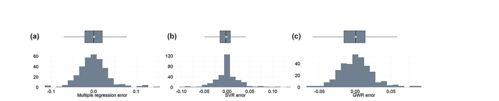
Paper Fig. 6 — the published error distributions for the same three model
families.
◆How to read this result
Clustered errors are the precondition, and they are tested rather than
assumed. If Moran's I on the errors were near zero there would be nothing
spatial left to explain, and Step 4 would be measuring noise.
Spatial awareness shows up in the errors, not just the fit. Moran's I falls
from +0.42 to +0.23 to +0.11 as the model becomes more spatially explicit. GWR has
already absorbed most of the spatial structure — which is exactly why it has least
left for geocomplexity to explain.
SVR and GWR fit almost identically here (0.803 vs 0.802) but differently.
The same R² conceals very different error geographies, and the Moran's I column is
what reveals it.
Step 4 · the claim
Geocomplexity explains the errors
What this step does
Regresses each model's absolute error on the geocomplexity of income and industrial
employment, using GWR so the strength of the explanation is allowed to vary over space —
as the article does. Magnitude, not sign, is what is being explained: a model can be wrong in
either direction.
Code
R — from R/40-explain-errors.R
dat$abs_error <- abs(err[[nm]]) # what the model got wrong
f <- abs_error ~ GC_Income + GC_Indemp # explained by geocomplexity alone
bw <- GWmodel::bw.gwr(f, data = sp, approach = "AIC", adaptive = TRUE)
g <- GWmodel::gwr.basic(f, data = sp, bw = bw, adaptive = TRUE)
Example output
Errors of
Bandwidth
R²
RSS
AIC
MLR
37
0.1806
0.1101
−1685
SVR
55
0.0888
0.0763
−1816
GWR
114
0.0220
0.0654
−1884
results/error-explanation.csv — geocomplexity alone, with no
access to the model or its inputs, accounts for 18% of where the linear model goes
wrong.
Demo run
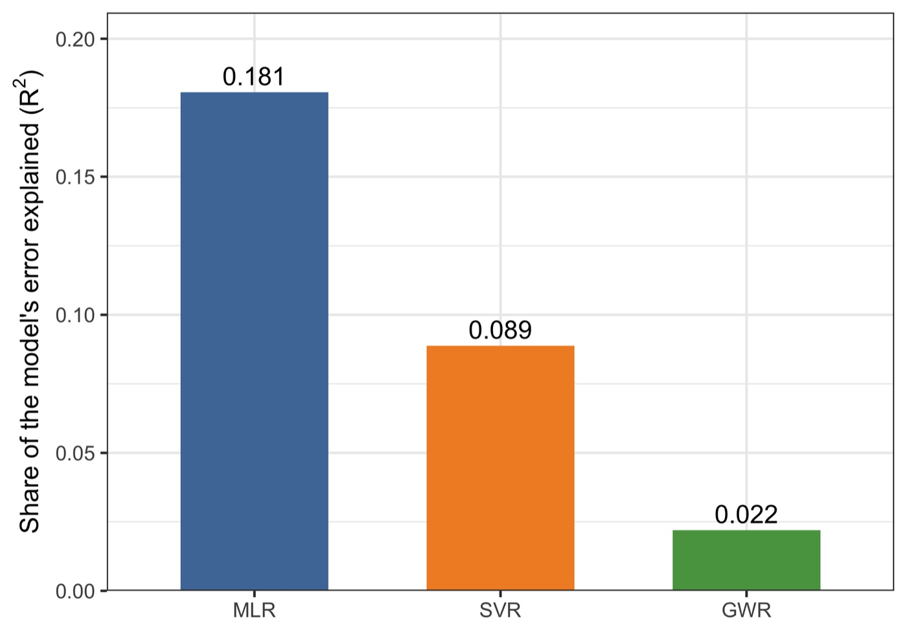
fig02 — the headline: the share of each model's error that geocomplexity
accounts for, falling as the model becomes more spatially aware.Demo run
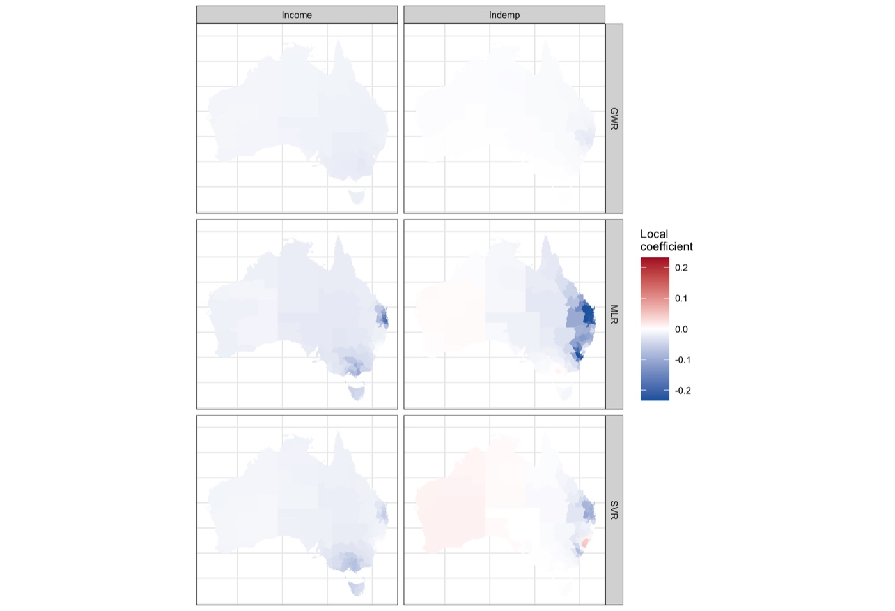
fig06 — where geocomplexity matters. The MLR row is strongly negative around
the eastern metropolitan regions; the GWR row is nearly blank, because little is
left.
Published reference · geocomplexity
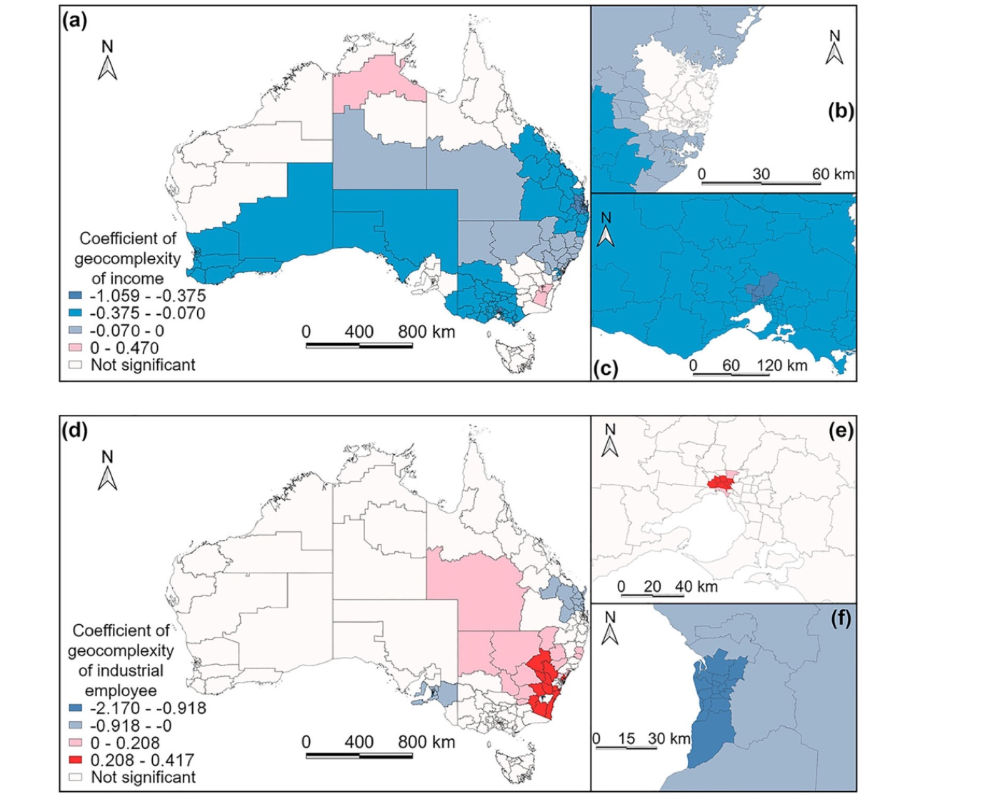
Paper Fig. 8 — the published counterpart of fig06: local coefficients of the
geocomplexity of income and of industrial employees in the multiple-regression error
explanation.
◆How to read this result
The ordering is the finding. 0.181 → 0.089 → 0.022. The better a model
already handles space, the less geocomplexity has to say about its mistakes. That
is what makes this a claim about spatial dependence rather than a coincidence: it
behaves the way the theory says it must.
Nothing about the model was used. Geocomplexity is computed from the
explanatory variables and the geometry alone, before any model is fitted. That it
still predicts where the errors fall is the whole point — and it means the
diagnostic is available before committing to a model.
The relationship is local, which is why the global scatter looks flat.
Pooled over the country the association is weak; mapped, it is concentrated in the
dense eastern cities where regions are small and neighbourhoods change quickly.
A global regression would have concluded there was nothing here.
Bandwidth tells the same story from another angle. It widens from 37 to 114
regions as the model improves: the remaining error structure gets broader and
vaguer until there is little local signal left to chase.
✓Checkpoint
results/error-explanation.csv holds one row per model, and the R² column
should descend with the model's spatial awareness. If it does not, check that the errors
were actually clustered in Step 3.
Step 5
Improve the models — the practical consequence
What this step does
If geocomplexity knows where a model is wrong, giving the model that information should
help. Two ways: add it as explanatory variables (GCMLR), or build it into the geographical
weighting itself (GeoCGWR).
Code
R — from R/50-improve-models.R
# geocomplexity as extra explanatory variables
m2 <- lm(Gini ~ ., data = cbind(d, gc))
# geocomplexity inside the geographical weighting
g2 <- geocomplexity::gwr_geoc(Gini ~ ., data = x, bw = "AIC", adaptive = TRUE)
Example output
Model
Variant
R²
Adjusted R²
MLR
baseline
0.5846
0.5743
GCMLR
+ geocomplexity
0.6215
0.6024
GWR
baseline
0.8024
0.7409
GeoCGWR
+ geocomplexity
0.8360
0.8319
results/model-improvement.csv — these four numbers are the
package's published vignette values, reproduced to four decimals by
run-all.R test.
Demo run
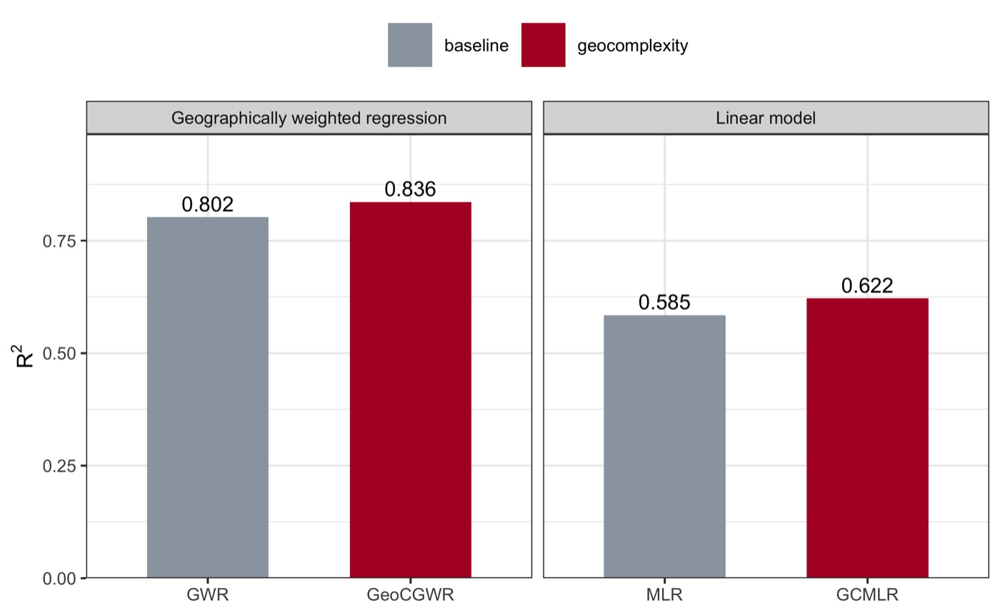
fig05 — adding geocomplexity raises R² in both families: +6.3% for the linear
model, +4.2% for geographically weighted regression.
◆How to read this result
The adjusted R² is the honest column. GCMLR adds eight variables, so a naive
R² would rise anyway. Adjusted R² rises too (0.574 → 0.602), which means the gain
survives the cost of the extra parameters.
GeoCGWR gains more than it appears. R² moves 0.802 → 0.836, but adjusted R²
moves 0.741 → 0.832 — because weighting by geocomplexity buys the fit with far
fewer effective parameters than widening the bandwidth would.
Improvement and explanation are the same fact. Step 4 showed
geocomplexity knows where the linear model errs; here that knowledge is handed
back and the error shrinks. A method that explained errors but could not reduce
them would be far less interesting.
3.4 Reading the Results Together
The errors are spatial
Moran's I on the
residuals is +0.42, +0.23, +0.11 and significant for all three models — clustered error is
the norm, not the exception.
Geocomplexity explains them
18%, 9% and 2%
of the absolute error, computed without ever seeing the model, and descending exactly as the
model's spatial awareness rises.
And repairs part of them
R² 0.585→0.622 and
0.802→0.836, with adjusted R² rising in both.
◆How to interpret — several angles
Mechanism. Every spatial model borrows information from neighbourhoods. Where a
variable's neighbourhood is internally inconsistent, the borrowed information is
wrong, and the model pays for it in error. Geocomplexity measures that inconsistency
directly, which is why it can anticipate the error without seeing the model.
Diagnostic angle. Because it needs only the explanatory variables and the
geometry, geocomplexity can be mapped before fitting anything. It answers "where
will this be hard?" — useful for deciding where to sample more, or where to distrust a
prediction.
Why the local view is necessary. Pooled over Australia the error–complexity
association is nearly flat; mapped, it is strong in the metropolitan east and absent in
the interior. Reporting only a global coefficient would have concluded, wrongly, that
there was no effect.
What geocomplexity is not. It is not a measure of the response's own pattern,
and not a substitute for local autocorrelation statistics — the article's Table 5
compares the two directly. It is a property of the explanatory geography, which is what
lets it be computed in advance.
Honest limits. The measure depends on a weight matrix you chose; the queen
graph here splits into two disconnected sub-graphs, so the offshore regions are only
ever compared with each other; and the three available measures disagree (median
correlation −0.09 between moran and spvar). State the
weights and the measure, or the number is not reproducible.
◆Reading order for your own run
1) Step 3's Moran's I on the errors — is there spatial structure to explain at all.
2) results/error-explanation.csv — how much geocomplexity accounts for, and
whether the order across models makes sense. 3) figs/fig06 — where it matters,
since the story is local. 4) results/model-improvement.csv — whether feeding it
back helps, on adjusted R². 5) results/gc-method-correlation.csv — whether your
conclusion survives a change of measure.
4 Adaptation, Writing & Reproducibility
4.1 Port to Your Domain
Geocomplexity needs only a geometry and some variables, so it travels wherever spatial models
do. Within this tutorial series it appears in three different roles:
Role
Where
What geocomplexity is used as
Diagnostic
this page (Zhang et al. 2023)
an explanation of where models err, computed before fitting
GC of every variable joins the variable set, doubling it from {X} to {X, GC(X)}
Spatial weight
gwr_geoc(), §3 Step 5
complexity enters the geographical weighting itself
The same measure, used three ways. Which one you want decides the calculation
method as much as the domain does.
What to edit
config/project-config.R — INPUT_FILE and RESPONSE,
then the neighbourhood: WEIGHTS_TYPE ("knn" for points),
WEIGHTS_QUEEN and WEIGHTS_STYLE.
GC_METHOD — "moran" when geocomplexity is a diagnostic of
spatial dependence, as here; "spvar" when it stands for pattern intensity, as
in the LPI tutorial; "shannon" for neighbourhood diversity. Step 2 prints
the correlation between them so the choice can be defended.
ERROR_EXPLAIN_VARS — which variables' complexity carries the explanation.
NULL uses all of them, which is a reasonable starting point before
selecting.
Nothing else: Rscript run-all.R test, then Rscript run-all.R.
!Common pitfalls
Report the weight matrix and the calculation method together — a geocomplexity value means
nothing without both, and the three methods can rank your variables differently. Check
connectivity before trusting anything: units with no neighbour have no defined complexity,
and disconnected sub-graphs mean some units are only ever compared with a handful of others.
Explain the absolute error, not the signed one, unless you have a reason to expect
direction. And do not read a flat global scatter as absence of effect — the association is
local, which is the whole reason the explanation is fitted with GWR.
4.2 Write the Paper
The published study has a clean architecture: define the measure, show it on the data, fit
conventional models, then use the measure to explain their errors and to improve them.
argue the ordering across models, the local geography of the effect, and what the diagnostic is worth before fitting
Where each manuscript section draws its material from.
Manuscript skeleton
manuscript outline
1 Introduction — spatial models assume dependence; errors cluster;
the gap: which places, and why (3 aims)
2 Geocomplexity — 2.1 Local and surrounding features (all formulas)
2.2 Calculation methods and the weight matrix
2.3 Design: explaining errors with GWR
3 Case & data — study area, response, explanatory variables
4 Results — 4.1 geocomplexity across the study area
4.2 baseline models and the structure of their errors
4.3 error explained, by model
4.4 where it is explained (local coefficients)
4.5 improvement when geocomplexity is fed back
5 Discussion — the ordering across models; the local geography;
use as a pre-fit diagnostic; limits of the measure
6 Conclusions — 6-8 sentences answering the aims
Rscript run-all.R test passes — 21 checks, including the package's own
published values to four decimals.
Delete results/, tables/, figs/ and
data/derived/, re-run Rscript run-all.R — every number and
figure on this page regenerates (~90 s).
The weight matrix, the calculation method, and the GWR bandwidth criterion are stated
in the manuscript and match config/project-config.R.
Error explanation is reported on absolute errors, and the local coefficients are
mapped rather than summarised to a single global number.
env/session-info.txt is included in the deposit.
◆Anticipate the reviewer
Is geocomplexity just local autocorrelation? → no: it adds the term describing how
the neighbours relate to each other, and the article's Table 5 compares the two
head to head. Why that weight matrix? → state it; tests/test-02 shows the
result depends on it. Why that calculation method? →
results/gc-method-correlation.csv. Could the improvement be from extra
parameters alone? → adjusted R² rises too. Is the effect real if the global scatter is
flat? → yes, and figs/fig06 shows where it lives.
References & credits
Demo outputs were generated by the scripts in this folder using the CRAN
geocomplexity package. Reference figures are reproduced from the article, which is
open access, for comparison.
Zhang Z, Song Y, Luo P, Wu P (2023). Geocomplexity explains spatial errors.
International Journal of Geographical Information Science 37(7):1449–1469.
doi:10.1080/13658816.2023.2203212
· PDF
(source of the concept, workflow, Fig. 5, Fig. 6 and Fig. 8 reference images, and of the
case reproduced here)
Lyu W, Song Y, et al. geocomplexity: Geographical Complexity. R package.
CRAN ·
calculation vignette ·
application vignette
(the reference implementation, the source of the demo data, and of the values locked in
tests/test-01)
Anselin L (1995). Local indicators of spatial association — LISA.
Geographical Analysis 27(2):93–115.
doi:10.1111/j.1538-4632.1995.tb00338.x
(the local Moran term geocomplexity extends)
Sun Y, Wu G, Song Y, et al. (2026). Local effects of pattern interactions in driving
urbanization. Int J Appl Earth Obs Geoinf 146:105072.
doi:10.1016/j.jag.2025.105072
· LISP tutorial
(geocomplexity used as an explanatory variable)